Here are some of my favorite rappers.
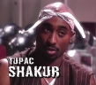
Tupac was a very educated rapper who wrote poetry. He died after getting shot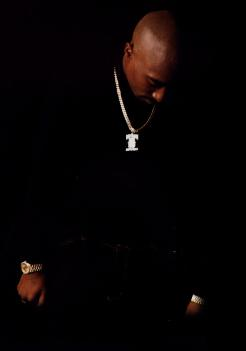
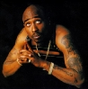
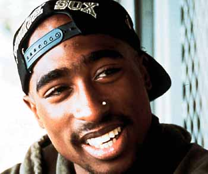
The
next artists are death row with snoop doggy dogg and the rest of
them.
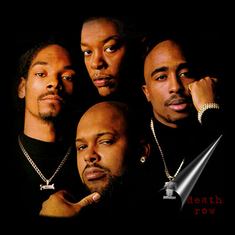
The next artists are Destiny's Child.
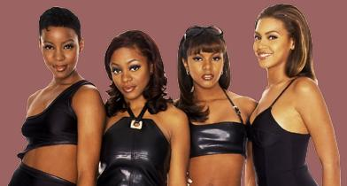
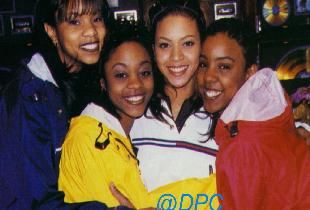
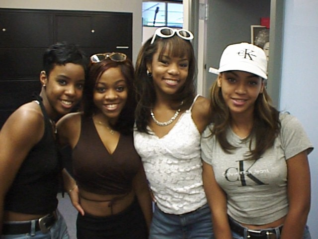
They are a very talented group and they have very nice voices. The one on the right at the end is Abeyance and she has a lovely voice. I hope I spelled her name right, if I didn't excuse me.The next artist is Lil' Zane.
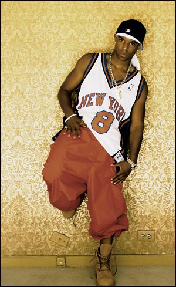
Lil' Zane is a very talented rapper and I love how he raps when he raps in 112's song "Anywhere".
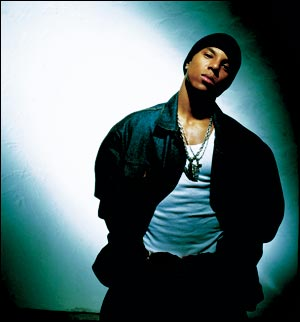 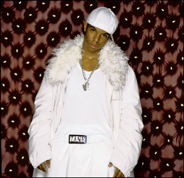
If you would like to see more photos of my favorite artists then click on this link. click here